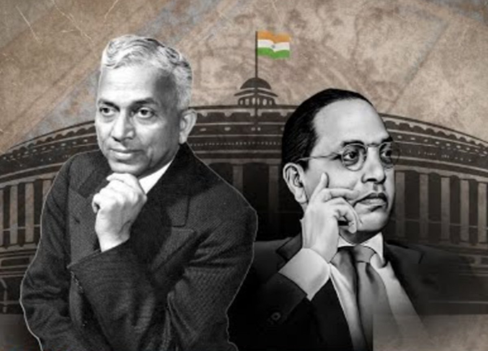
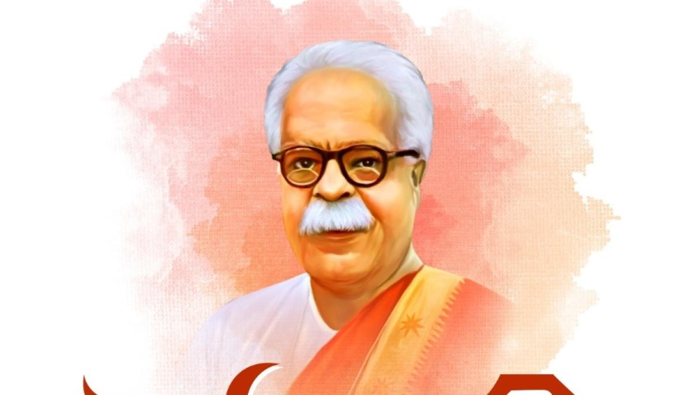
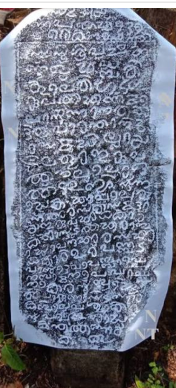
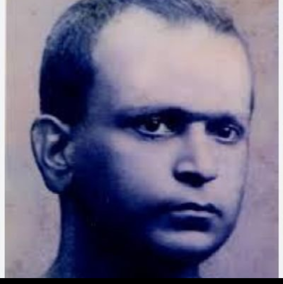

The Shudra Stigma: How Caste Myths, Elite Neglect, and Buried History Silenced Tulu
Not every language is conquered by armies. Some are conquered by ideas.
For over 70 years, the Tulu language has been kept in a state of constitutional purgatory, excluded from the Eighth Schedule despite its deep antiquity. This was not an accident of history, but a result of a manufactured narrative that labeled Tulu as a "secondary" or "unlettered" tongue.
In this investigation, we peel back the layers of elite neglect and administrative bias to reveal a different reality. From the royal courtrooms of the Alupas to the global trade routes, the evidence is undeniable: Tulu has always been a language of sovereignty, statecraft, and high-art.
That is the story of Tulu. For nearly two centuries, Tulu was made to wear a social label: “Shudra Bhasha.”
I. The Manufacture of a Stigma: The Post-Keladi Erasure
Following the fall of the Keladi Nayakas, a new socio-political elite emerged. Seeking prestige in colonial structures, they rebranded Tulu as a "Shudra tongue"—a language fit only for the fields, never the courtroom or the academy.


The struggle for Tuluva recognition was often a silent battle fought in the shadows of giants. B.N. Rau, the primary architect of the Indian Constitution, represented the highest level of legal authority, yet the Tulu language remained 'invisible' in the state framework. Simultaneously, Manjeshwar Govinda Pai served as the region's linguistic conscience, uncovering the classical depth of regional literature.
The Malayalam Contrast: Power as a Linguistic Shield
While Tuluva giants operated with universalist detachment, Malayali contemporaries—K.M. Panikkar and V.P. Menon—demonstrated how administrative power could be used as a shield for regional identity. They understood that Constitutional Justice requires active political maneuvering. While they ensured Malayalam was positioned as a successor state language, the Tuluva leadership allowed Tulu to be classified as a 'dialect' of neighboring states.
II. The Stone That Shattered the Myth

This serves as an archival rebuttal to the 'Shudra Bhasha' myth. It reveals a sophisticated administrative Tulu—complete with specific terminology for land grants—proving that Alupa royalty recognized Tulu as a language of sovereign authority.
III. The First Rebel: S.U. Paniyadi

In 1928, S.U. Paniyadi authored the Tulu Vyakarana, proving Tulu possessed an independent internal logic. Paniyadi recognized that a language without a written grammar is vulnerable to being labeled 'primitive.' His rebellion was an intellectual offensive against the socio-political gatekeepers of his era.
IV. The Intellectual Revolution
- Devi Mahatme – By the Adi Kavi.
- Tulu Mahabharato – 14th-century translation by Arunabja.
- Karnaparvo – Authored by King Harihara.
- Sri Bhagavatho – 17th-century epic by Vishnutunga.
- Kaveri – Classical poetic architecture.
- Tulu Ramayana – Completing the Classical Triad.
Mundkur’s Evidence Toolkit:
Ravindra Mundkur utilized advanced mapping and toponymic archaeology to trace Tuluva roots back to ancient trade routes. His work proves Tulu was a language of international commerce.
- The Tolocoira Link: Identifying Tulunadu in 2nd-century Greco-Roman maps.
- Toponymic Archaeology: Village names as 'linguistic fossils' predating external influences.
- Maritime Sovereignty: Vocabulary documenting our command of the Arabian Sea.
Complementing these finds, the lexical research of P.S. Rai provided the final pillar of evidence, proving the language was entirely original and autochthonous.
Conclusion: From Stigma to Sovereignty
The label of "Shudra Bhasha" was an administrative weapon. This collective evidence shatters that stigma, proving that Tulu possesses high antiquity, an independent literary tradition, and a unique civilizational identity.